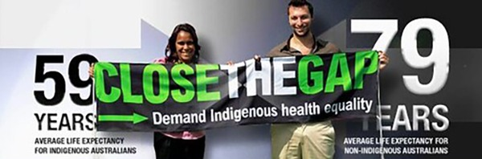

Original Blackboard item · _7400120_1
Since the initial shock of the arrival of the British, Australian First Nations Peoples have been subjected to flawed and racist goverment policies, initially aimed at physical and cultural genocide. The legacy and ongoing impacts of this history continue to impact all Australians. The dominant negative and deficit based narrative on Aboriginal and Torres Strait Islander peoples health continues, despite government policies and rhetoric being focused on reconciliation and Closing the Gap (Bond & Singh, 2020). Australia’s approach to United Nations Declaration on the Rights of Indigenous Peoples (UNDRIP) is another example of government rhetoric not matching government action. Although Australia has formally endorsed the Declaration, it still hasn’t incorporated it into domestic law. Government emphasise the importance of respecting Indigenous knowledges and claim to support Aboriginal and Torres Strait Islander Peoples rights to manage their own health, yet they stop short of embedding those commitments (from UNDRIP) in legislation (Pitt, 2025).
During this module, we will explore the key stages of the colonisation process and its impact on the health and wellbeing of Aboriginal and Torres Strait Islander Peoples.
These stages include:
Nothing’s Really Changed
We watched their ships come in
as they landed on our shores
What kind of people they were
we weren’t really sure.
At first they acted friendly
sharing what they had
like flour, tea and sugar
and tobacco that they had.
Once that we had accepted
things began to change.
That’s when we heard the gunshots
and the rattling chains
now the rest is history
and nothing’s really changed
‘cos here today in the 90s
we still wear the ball and chain…
— (John Morgan (Reed-Gilbert, 1997))

Complete the reading below via MyReadings:
Bennett, B. (2019). The importance of Aboriginal history for practitioners. In B. Bennet, & S. Green (eds.), Our Voices, Aboriginal Social Work. London: Red Globe.
This text gives a brief overview of the history of Indigneous Australian Peoples from colonisation to the present, providing a broad social perspective of history from an Aboriginal woman's perspective. Bennett discusses a succession of flawed government policies, and how their implications in relation to social, political and health determinants continue to impact Aboriginal and Torres Strait Islander peoples health and wellbeing.
Reflecting on the Bennett (2019) chapter: Have you been prompted to re-examine your own experiences and interactions with Aboriginal and Torres Strait Islander Peoples? Perhaps as a target of racism, perhaps as a perpetrator or as a witness or bystander. Since reading this chapter what might you do differently and why?
Bring your responses to the tutorial this week where we will discuss this further.